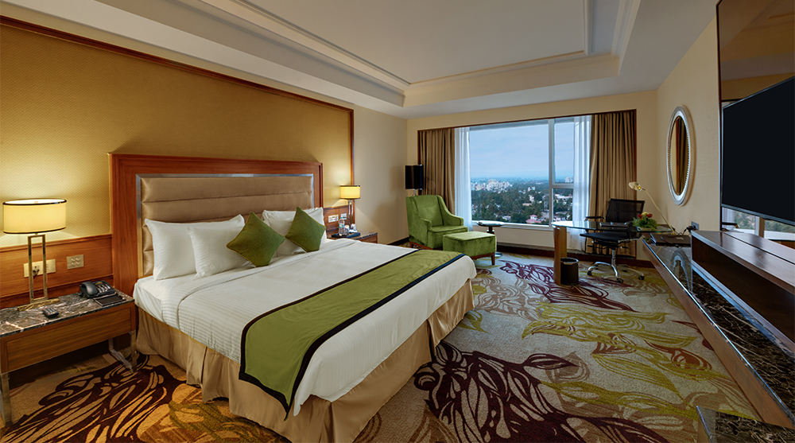
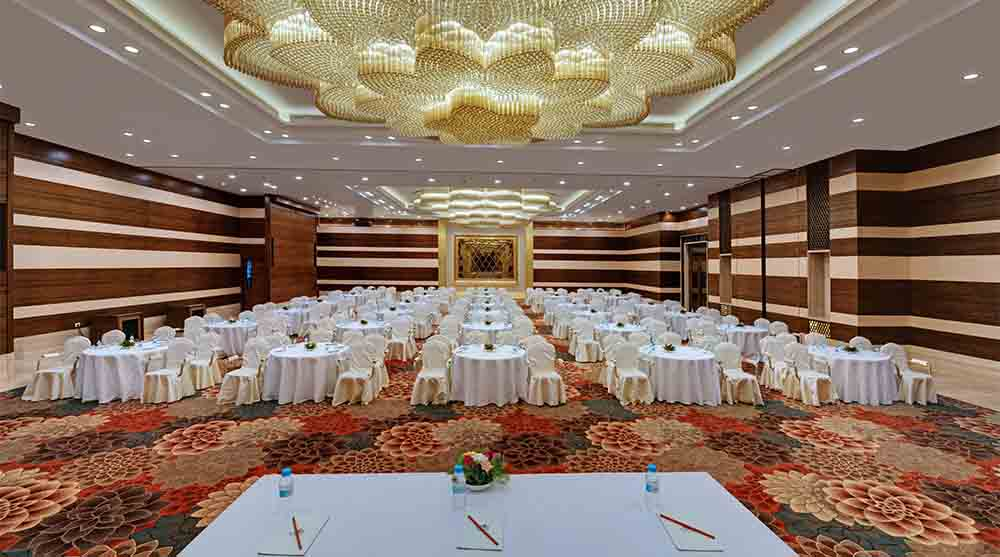
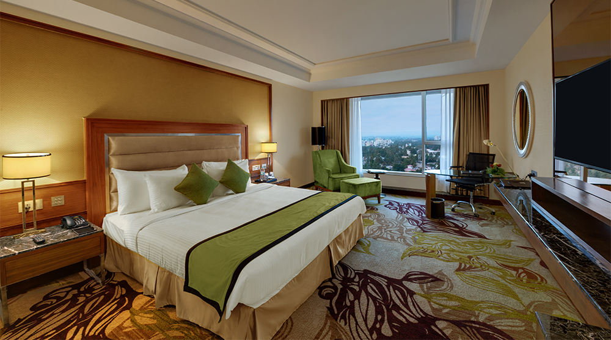
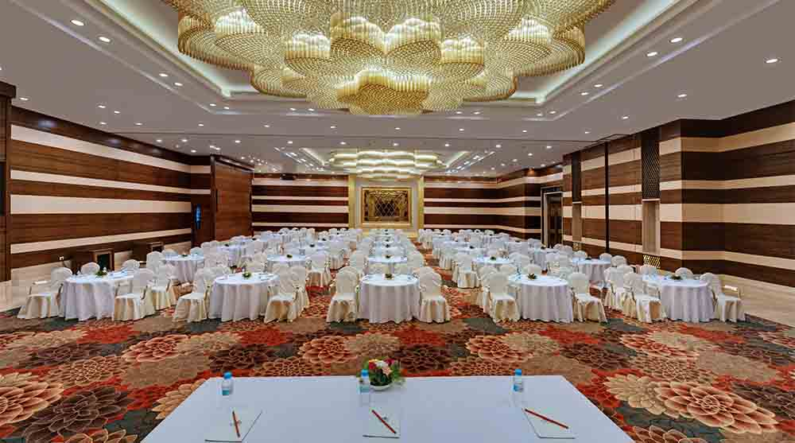

Address: 2104/15, E Ward, Old Pune - Bangalore Hwy, Kawala Naka, Pawar Colony, Shahupuri, Kolhapur-416005,
Maharashtra,India.
Email : sales@sayajikolhapur.com
Phone : +0231 255 5999
Website: www.sayajihotels.com
Sayaji Kolhapur brings the best of both worlds together, Kolhapuri warmth and Sayaji services. Proud to be the finest hospitality property with respect to architecture, food, and service in Southern Maharashtra region. The magnificence of the property will dazzle you to the likes of a modern Maharaja. A complete experience that is sure to create a pleasurable memory in your life.
 


